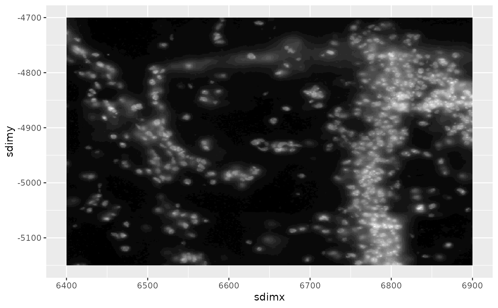

Append image to ggplot as annotation_raster
Source:R/gg_annotation_raster.R
gg_annotation_raster.RdAdd a spatially mapped image to a ggplot2 gg object.
For terra-based images, the image will be a cropped and sampled version
of the full size image on disk that has sufficient resolution for the size
of the plot requested.
Usage
# S4 method for class 'ggUnionClass,list'
gg_annotation_raster(ggobj, gimage, ext = NULL, geom_blank = TRUE, ...)
# S4 method for class 'ggUnionClass,giottoImage'
gg_annotation_raster(ggobj, gimage, ext = NULL, geom_blank = TRUE, ...)
# S4 method for class 'ggUnionClass,giottoLargeImage'
gg_annotation_raster(ggobj, gimage, ext = NULL, geom_blank = TRUE, ...)
# S4 method for class 'ggUnionClass,giottoAffineImage'
gg_annotation_raster(ggobj, gimage, ext = NULL, geom_blank = TRUE, ...)Arguments
- ggobj
ggplot2
ggobject- gimage
giottoLargeImage,giottoImageorlistthereof- ext
Object that responds to
ext(). Defines the plot spatial ROI This extent defines which portions of the image(s) will be plotted/should be sampled for. The default is the same extent as the image.- geom_blank
logical. Whether to apply
[ggplot2::geom_blank()]to theggobject so that the image can be plotted by itself.- ...
additional params to pass
Details
No ... params are implemented for giottoImage.
... params for
giottoLargeImage passes to automated resampling params see
?auto_image_resample for details
Examples
gimg <- GiottoData::loadSubObjectMini("giottoLargeImage")
gg <- ggplot2::ggplot()
out <- GiottoVisuals::gg_annotation_raster(gg, gimg)
print(out)
